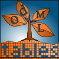
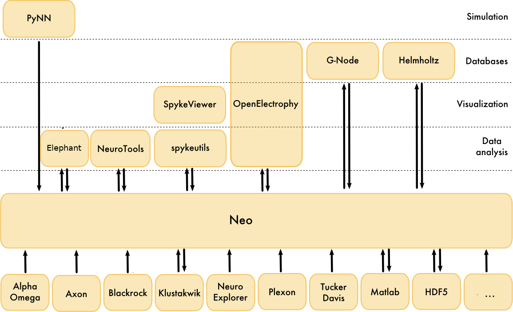

Challenges and opportunities in scientific software development
Julia Sprenger
1 Feb 2020
Science
Aim: understand <system>* better (* molecule, species, earth, universe, ...)

Scientific Reality

What is not part of this
time for improvements not directly contributing to the scientific progress, e.g.
- infrastructure software development
- refactoring / restructuring of code
- long term maintenance of code
education of software development skills
- best practices for code style
- quality assurance
- test driven development
- continuous integration
- version control
- validation
money for
- software development training courses
- non-scientific software developers
- software infrastructure (IT, self hosted services, ...)
Additional issues
trust
- for seemingly small projects software is quickly self-implemented
- for complex projects commercial software seems more reliable
trust
- publication comes first, software release maybe later
- making errors is taboo, reputation issue
- publishing code pushes scientific progress
- Pioneering in code publication
Izhikevich (2006) Polychronization: Computation with Spikes - Reimplementation and examination
Pauli et al. (2018) Reproducing Polychronization: A Guide to Maximizing the Reproducibility of Spiking Network Models
- Pioneering in code publication
dedication
- software development is a side occupation
- no extended time reserved for this
- not continuous task, but on demand
- has a low priority compared to scientific findings and publications
- rapid changes in staff & small / not clearly defined user base
- no dedicated team per software project.
funding usually supports individuals. - focus on numeric precision
Examples of open source scientific software projects
odMLtables |
 |
- extends usability of open metadata markup language (odML)
- interface between common laboratory formats (xls/csv) and odML
- additional utility functionalities
odMLtables
- initiated in 2015
- 1 developer
- 0 contributors
- 1-10 users
- 1 publication
Neo |
|
- interface between 30+ electrophysiology dataset formats (proprietary & open)
- standardized data representation

Neo
- initiated in 2009
- successor of previous electrophysiology data handling packages
- used in 130+ repositories
- 3 developers (3 labs)
- 55 contributors (8 active)
~100 direct users
presented at scientific conferences & workshops
Nest
- simulator for spiking neural network models
- scales from laptops to exascale computers [Jordan et al. 2018]
- community-standard
Nest
- initiated in 1993
- owned by The Neural Simulation Technology Initiative
- > 10 developers (5 active)
- 1 funded position for project documentation
- 79 contributors (>10 active)
- dedicated website (news, announcements, tutorials, videos, brochures)
- publication list (user / software development)
- dedicated nest conferences & user workshops & hackathons
There's a lot more
|
Neuroscience
Biology
|
Physics
... and a large and growing number of smaller projects |


What can you do?
... as a software developer
- talk to scientists to discover new interesting problems
get involved in existing scientific projects and provide feedback
- make your documentation readable by non-experts, 'installation for dummies'
advertise within potential user community (conferences, workshops)
... as scientific open software project
- involve a large user (and potential contributor) base
- simplify usage and contribution on all levels
- user & developer guide
- tutorials
- solve simple issues first
- define project standards and contribution guide
- advertise within potential user community
... as a scientists
- use existing open source tools, don't start from scratch
- make sure your software outlives your career
- create links to other packages
integrate your project into larger framework
consider software development aspects from the beginning
Scientific Vision
Thank you!
Recommendations for institutes
- provide kickstart in basic software development techniques
- version control, coding standards, CI
- pair programming, test driven development, code review
scrum, kanban
- have a dedicated software coordinator
- define project standards
- organize hackathons / topic weeks / workshops
Additional references
Using markdown and pandoc for presentations
Differences Academia & Business
- Academia
- reputation of an individual counts
- longer software development cycles
- main focus: scientific results & paper publications
- Business
- reputation of company counts
- scrum style software development cycles
- main focus: product development & marketing

Stages of scientific software
- custom code for experiment specific task (e.g. experiment control)
- for current use only
- no documentation
- no reuse possible
- not maintainable
- not shareable
- shared code within a small community
- used by multiple people
- sparsely documented
- maintained for the duration of a project
- reuse would require modifications
- globally shared code
- used in different projects
- well documented
- maintained across projects
## Growing number of scientific open software projects & code - Increasing awareness of software as scientific basis Katerbow & Feulner (2018): Recommendations on the Development, Use and Provision of Research Software, Research Software Working Group of the Alliance of German Science Organisations - Funding initiatives will require code & software publication